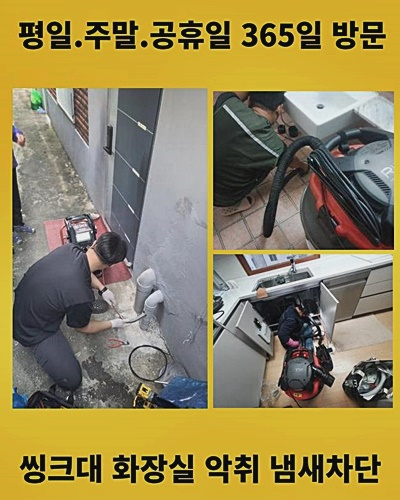
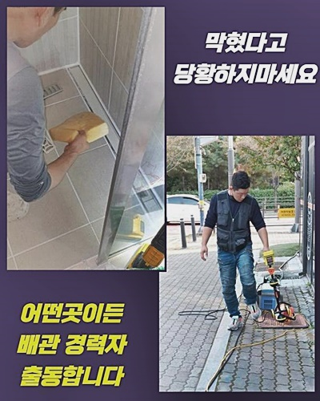
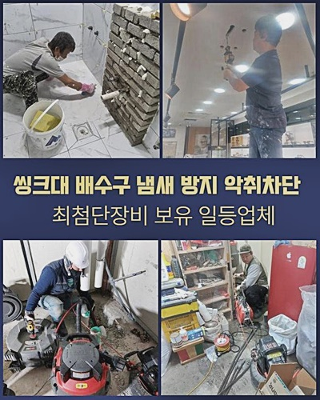
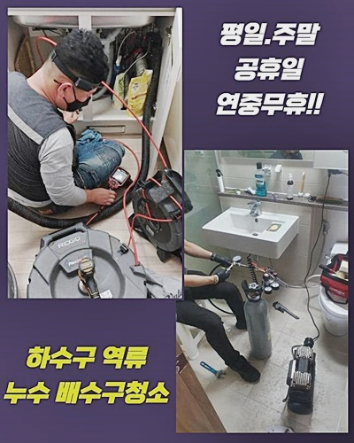
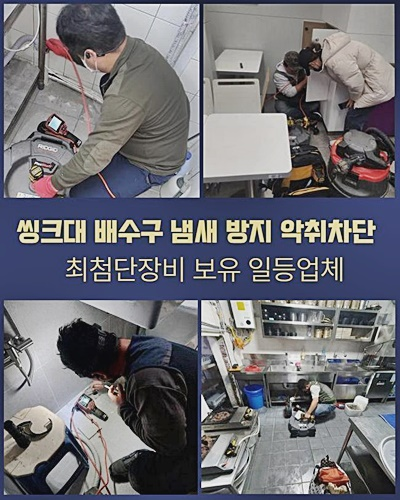
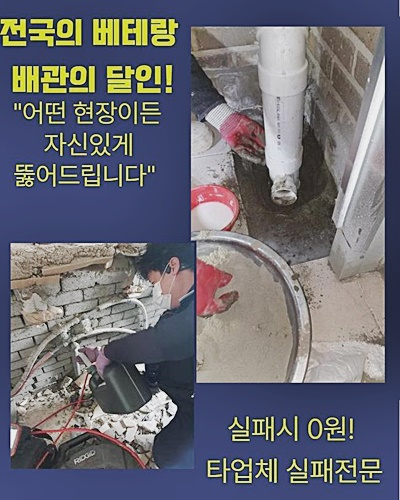
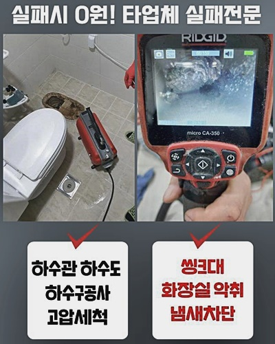

🏠 양평 단월면싱크대배수관막힘 개군면 배수로뚫기 출장설비
용인시 처인구 배관막힘 전문 시공 후기

📋 작업 개요
- 위치: 용인시 처인구, 수원시 영통구, 화성시 동탄
- 서비스 유형: 배관막힘, 고압세척, 내시경점검
- 작업 일시:
- 업체명: 하수구수사대 (010-5615-2118)
🔍 문제 상황
양평 단월면싱크대배수관막힘 개군면 배수로뚫기 출장설비
막힘증세는 일상에서 발생할수있기에 조기대처를 취하시는것이 좋은데요
막힌이유와 상황마다 적절하게 대처하는것이 필요하고 빠르게 내방드려 문제처리가 가능해요
하수구문제에 있어서 확실하게 대응해서 최상의서비스로 제공하고있어요
배수구가 막히게되어 불편하시다면 아무때나 연락주셔도 괜찮아요 심혈을기울이는 작업을토대로 해결해드릴게요!
얼마전에 빌라에 살고있는 고객이 하수도막힘증세로 전화를하셨는데요
오늘작업한 아파트의경우 만들어진지 오래된 건물이었죠
욕실에서 역류가 발생하여 연락주셨다고 하셨는데요
저희의경우 신속한 대응으로 의뢰자분의 편의들을 우선순위로 생각하고있으며 권장하는시간에 알맞게 처리해드리고있죠
평일주말 가리지않고 출동을 진행하여 막힘으로인한 곤란함을 해소해드리려고 하고있죠
하수도에 얼마나 물이넘치는지 체크한뒤 물을흘려보았죠
하수구바닥쪽이 흥건한상태로 역류현상이 심각하다는것을 알수있었는데요
하수도안을 살폈더니 오염물질때문에 막혔다는것을 예상했습니다
막히는현상은 갑작스럽게 일어나지않고 이용하게되면서 이물질들이 쌓이게되며 막힘문제가 발생되는것이고 이러한점에대한 관리의필요성을 안내해드렸죠

🔎 원인 분석
💡 전문가 진단: 정밀 진단 장비를 사용하여 슬러지의 고착 여부를 판명하고 타격/세척 작업을 실시했습니다.
이를통하여 고객의 궁금증들을 해소시켜드렸어요
이번장소의경우 이물세척이 충분하지못한것이 원인이었답니다
잔여물질이 쌓이게되어 물이정상으로 흐르지못했답니다
내시경카메라로 상태를체크하며 세척과정을 꼼꼼히 설명드렸죠
장시간이 흘렀다보니 남겨진 오염물의형태가 어떤지 확실하게 파악할수없어도 신속하게대응하여 해결할수가 있었답니다
동일한현상이 발생하지않게끔 주의를기울여 확실한서비스를 보여드릴것을 약속할게요
배관속오염물을 정확히 제거해줘야해요
날카로운 도구들을 활용해서 셀프적으로 시도해보지만 성공해내기 어려우며 내버려둘경우 도리어문제를 악화시킬수있죠
그렇기때문에 전문가를 통하여 안속이물질을 확실히 제거시켜야합니다
이러한현상은 부주의함 때문에 발생할수있는데 식기설거지시 기름슬러지들이 하수구안에 축적되면서 막히게되는것이죠
하수관이 막히게되어 전화하신 의뢰자분을 도와드리고자 신속히 작업장소로 출동했어요
점검해보기위하여 전문장비들을 준비해서 작업을 진행해보기로했죠
이물을 없애는것은 대부분석션이나 샤프트기를 써서 제거하고있죠
오염물이 쌓인곳은 고압청소를 진행해 처리하고 잔여이물은 흡입장비로 빼내고있답니다

🔧 작업 과정
확실하게 이물질들을 소거시키고 배수관을 깨끗한상태로 만드는데 신경을쓰고있어요
이런과정으로 하수구세척을 진행하여 곤란한부분을 해소시키고 더나은환경으로 제공할수있죠
저흰 출동시간이 제한되지않아요
이유를 알려드리면 밤낮가리지않고 하수구가 막히게되어 도움을 요청할수있기 때문이겠죠
출동요청을 하셔서 전문장비들을 모두챙기어 현장장소로 출동해보았죠
화장실쪽에 들어가보니 심한냄새가나서 좋지못한 상황인것을 알아차렸죠
일단물을 흘려보내고 역류상태가 어떠한지를 세밀하게 살핀뒤 배수상황이 어떠한지까지 체크해봤습니다
저희기술자가 방문해보기 며칠전에도 다른업체에서 작업하여 해결해내지 못했음을 알려주셨어요
따라서 우리를 부르셨다고 합니다
저흰 출동과정에대한 청구드리지않기에 좋은조건이라고 말해주셨습니다
성공한뒤에도 AS까지 진행하기에 상당히 만족해하셨죠
하수도내부를 들여다보고자 하수구카메라를 활용했죠
하수구상황을 들여다보니 오염물질이 발견된걸 확인할수가 있었습니다
효율적이게 문제해결하고자 노력했으며 확실한결과물을 보여드릴수가 있었어요!
하수관안에 남겨진 잔여물을 없애기위해 흡입기를통해 이물청소가 진행되었죠
석션작업후 물이빠지는것을 체크하기위해 빠지게해봤지만 물이내려가는것이 원활히 작동되지않는것을 발견했어요
그래서 배관내시경을 사용해서 하수관안을 세세히 관찰했는데요
관찰할때 카메라기계가 막히는지점이 보였으므로 상세하게조치를 취할수있었어요
분쇄장비를 통해서 굳은이물까지 소거해보니 원활히 물이빠지는걸 확인할수있었어요
심혈을기울여서 작업이 마무리되고 예방방법도 제시해드렸습니다
의뢰자의 협조를받아 원활하게 작업계획이 이루어졌죠
막힘현상을 처음경험해서 당황스럽고 막힌이유를 알지못해 답답할거에요


✅ 작업 완료
막힘증세때문에 일상에 지장이갈경우 신속대처가 중요하므로 언제나 저희들한테 문의하세요!
문제해결을 위해서 성심성의껏 작업할게요
여러번이나 말씀드렸지만 하수구막힘은 내버려둘수록 심화될수있사오니 막힘징조를 보이게될때 대처해보실것을 추천드려요
60분안쪽으로 현장으로 도착할수있으니 전화만주시면 신속빠르게 방문드릴게요
투명히 수립계획을 공개드리니 걱정마세요!
이밖에도 궁금한것이 있을경우 문의하셔서 물어보셔도되기에 맘편히 요청하시면 상세한상담으로 도와드려볼게요




⚠️ 하수구 배관 막힘 예방 및 관리 가이드
- ✅ 머리카락, 비닐, 물티슈 등 물에 분해되지 않는 이물질은 절대 흘려보내지 마세요.
- ✅ 기름기 많은 식기는 설거지 전 키친타올로 먼저 기름때를 닦아내세요.
- ✅ 주기적으로 배수구에 뜨거운 물을 가득 부어주어 유지방 고착을 방지하세요.
- ✅ 작업 후 1년 이내 재발 시 무상 A/S 보증 서비스를 제공합니다.
💡 핵심 정리
- 확실한 장비 작업(내시경 점검 및 샤프트 스케일링)으로 원인을 뿌리 뽑습니다.
- 작업 후 1년 이내에 동일한 부위 재발 시 100% 무상 A/S 서비스를 보장합니다.
- 서울 · 경기 · 인천 전 지역에 24시간 언제든 긴급 출동할 수 있도록 항시 대기 중입니다.
❓ 자주 묻는 질문 (FAQ)
🚨 용인시 처인구 배관막힘 문제로 고민이신가요?
정확한 원인 진단과 확실한 시공으로 재발 없는 해결을 약속드립니다.
24시간 긴급 출동 | 서울 · 경기 · 인천 전지역 | 1년 내 재발 시 무상 A/S